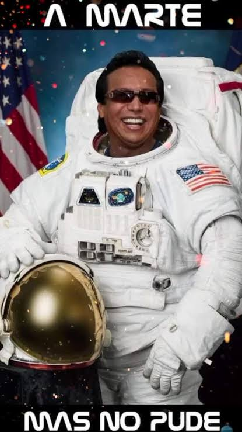

Jerarquía de Encabezados y Biografía
Diomedes Dionisio Díaz Maestre
Icono del Vallenato Colombiano
El Cantautor del Pueblo
Máximo Vendedor de Discos en Colombia
Ganador del Grammy Latino 2010
El Cacique Mayor
Diomedes Díaz fue un cantautor colombiano considerado como uno de los máximos exponentes de la música vallenata.
Nació en San Juan del Cesar, La Guajira, y vendió millones de copias a lo largo de su trayectoria artística.
Su estilo único de interpretación y sus inolvidables composiciones convirtieron sus temas en verdaderos himnos populares.
Trayectoria y Éxitos (Listas)
Acordeoneros que lo acompañaron (Lista Desordenada)
- Nafer Durán
- Elberto "El Debe" López
- Juancho Rois
- Franco Argüelles
- Álvaro López
Canciones Inmortales (Lista Ordenada)
- Amarte Más No Pude
- La Reina
- Sin Medir Distancias
- Tú Eres la Reina
- Mi Primera Cana
Álbumes Destacados y Éxitos (Lista Anidada)
- Título del Álbum: Título de Amor (1993)
- Amarte Más No Pude
- Mi Primera Cana
- Llegó el Verano
- Título del Álbum: 26 de Mayo (1994)
- La Plata
- 26 de Mayo
- Buenas Tardes
Galería de Imágenes y Enlaces
A continuación se muestran las imágenes con sus atributos src, alt, title y width:

Aprende más sobre la vida del Cacique en Wikipedia:
Biografía Completa de Diomedes Díaz (Abre en nueva pestaña)
Grandes Álbumes y Años de Lanzamiento (Tabla)
Tabla creada con las etiquetas <table>, <tr>, <th> y <td>:
| Álbum | Acordeonero | Año |
|---|---|---|
| Tres Canciones | Elberto López | 1976 |
| Título de Amor | Juancho Rois | 1993 |
| Listo Pa' la Foto | Álvaro López | 2009 |
Multimedia (Video iframe y Audio)
Video en Vivo: "Amarte Más No Pude" (iframe)
Audio Player: "Amarte Más No Pude"
Reproduce la canción utilizando la etiqueta <audio controls>: